「헤르메스 에이전트」 이 영상 하나로 끝냅니다 (53분 총정리)
▶ 원본 영상 보기한눈에 보기
- 헤르메스 에이전트는 Nous Research가 만든 오픈소스 AI 에이전트입니다. 서버에서 24시간 돌면서 일을 처리하고, 문제를 풀 때마다 그 방법을 스스로 스킬로 저장해 점점 나아집니다. 질문에 답하는 챗봇과는 다릅니다.
- 실행 위치로는 VPS를 추천합니다. Hostinger의 원클릭 설치로 서버를 띄운 뒤, 모델(Codex·GPT 5.5 등 상위 모델)과 메신저(텔레그램·디스코드)를 연결하면 바로 쓸 수 있습니다.
- 영상의 핵심 활용은 '세컨드 브레인'입니다. Notion과 Claude 대화 기록을 통째로 넣고 크론 브리핑·메일 답장 초안·시장 모니터링을 맡기면, 한 달쯤 지나 결과 품질이 확 달라진다고 합니다.
- 최근 업데이트로 칸반 멀티에이전트, 세션 리콜, MoA(여러 모델 답 종합), 링크를 스킬로 바꾸는 기능, 배운 기억을 확인·편집하는 화면, 데스크톱 프로젝트 기능이 생겼습니다.
- 봇 모드는 기존 '프로필'에 얼굴과 채팅창을 붙인 것입니다. 봇끼리 일을 넘겨받게 할 수 있고(리서처→에디터→디렉터→비평가), 비싼 완성품인 Grok Bot보다 싸지만 직접 세팅할 것이 많습니다.
이런 분께 도움이 됩니다
- 헤르메스(또는 OpenClaw)를 들어 봤지만 설치부터 실제 활용까지 한 번에 정리된 자료가 필요한 분
- 반복 업무(브리핑·메일·모니터링·콘텐츠 제작)를 AI에게 맡겨 '루프 밖으로' 나오고 싶은 1인 사업자·개발자
핵심 내용
헤르메스란 무엇인가 (1:01)
헤르메스는 서버 위에서 24시간 돌아가는 맞춤형 자동화 에이전트입니다. 질문에 답하는 GPT·Claude와 달리, 내 생활의 병목을 찾아 자동화하거나 새로운 시각을 줍니다. 앱 만들기, 이메일 보내기, 일정 확인 등 사람이 하는 일을 대부분 처리합니다.
| 비교 | OpenClaw | 헤르메스 | Claude Code / Codex |
|---|---|---|---|
| 설계 중심 | 중앙 게이트웨이(컨트롤 센터) | 에이전트 자체(학습 루프) | 코드 저장소 |
| 강점 | 여러 채널 메시지 라우팅, 여러 에이전트 관리 | 문제를 풀면 알아서 스킬로 저장해 다음에 더 잘함 | 코드 작업 특화 |
| 약점(영상 주장) | 오래 쓰면 메모리가 무거워져 느려지고, 가끔 연결이 끊김 | 첫날엔 "그냥 그런데?" 싶음 | 리서치·브리핑·자동화는 담당 밖 |
- 추천 조합: 소프트웨어 개발은 Claude Code, 나머지(리서치·브리핑·자동화)는 헤르메스. OpenClaw와 같이 쓰는 것도 좋다고 합니다.
- 배경으로 '맥락이 새로운 코드다'라는 흐름(하네스 엔지니어링)을 듭니다. 안드레 카파시의 말: "내가 병목이 되면 안 된다. 매번 프롬프트를 넣는 구조는 한계가 있으니 루프 밖으로 나와야 한다."
💡 한 달은 써 봐야 진가가 나온다. 내가 무엇을 선호하는지 학습하기 때문이다.
어디서 돌릴까 (4:33)
| 선택지 | 비용 | 특징 |
|---|---|---|
| 집에 남는 PC | 무료 | 사양이 낮아도 돌아감 |
| 전용 PC 구매(맥미니 등) | 비쌈 | OpenClaw 사용자들이 많이 씀 |
| VPS(빌려 쓰는 가상 서버) | 월 5~20달러 | PC를 켜 두지 않아도 24시간 동작, 위험이 가장 적음 |
- 메인 PC 설치는 보안상 비추천합니다. 헤르메스 쪽도 가상 환경을 권장합니다.
- 영상은 Hostinger를 선택했습니다(광고 지원). 이유는 헤르메스 원클릭 설치 지원, 월 9달러 안팎의 가격, OpenClaw·Paperclip(자막상 '페이퍼클릭') 등 다른 에이전트에 대한 문서·지원입니다. 추천 플랜은 KVM2이고, 장기 결제가 더 쌉니다.
설치와 초기 세팅 (6:54)
설치 순서와 명령어는 아래 따라 해보기에 정리했습니다. 영상이 강조한 부분만 먼저 적습니다.
- 모델이 제일 중요합니다. "성능 낮은 모델을 써서 헤르메스가 별로라고 느끼는 경우가 가장 많다." Opus나 Codex가 가장 좋지만, 지금은 Claude API가 비싸고 토큰·성능 이슈가 있어 Codex를 추천합니다.
- OpenAI 구독자는 OAuth 로그인으로 추가 비용 없이 쓸 수 있습니다.
- OpenRouter를 쓰면 무료 모델을 포함해 여러 모델을 저렴하게 섞어 쓸 수 있습니다. Gemma 같은 로컬 모델도 되지만 워크플로를 제대로 돌리려면 프론티어 모델(최상위 모델)이 낫습니다.
- 메신저는 텔레그램이 가장 쉽습니다(BotFather에서
/newbot→ 토큰을 붙여 넣으면 끝). 디스코드는 일반·리서치·유튜브처럼 목적별 채널을 나눌 수 있는 것이 장점입니다.
처음 쓸 때의 마음가짐과 슬래시 명령어 (12:45)
처음부터 원하는 결과가 나오지 않는 게 정상입니다. 내 생활을 인수인계한다는 생각으로 정보를 충분히 넣어야 합니다. 내가 매일 하는 일을 적어 보고, 그중 시간이 많이 드는 것과 소프트웨어로 자동화할 수 있는 것을 헤르메스와 함께 찾아보라고 권합니다. 매일 정해진 시간에 물 마시라는 알림처럼 작은 일도 효과가 큽니다.
| 명령어 | 기능 |
|---|---|
/skin |
테마 변경(영상에서는 웜라이트 모드를 써 보다가 Poseidon 스킨으로 바꿈) |
/insights |
지금까지 실행한 모든 세션 분석 |
/steer(자막상 '슬래시스틸', 정확한 철자 불분명) |
작업을 멈추지 않고 중간에 방향 바꾸기. 예: "답장할 메일 알려줘" 다음에 "받은편지함에 있는 것만" |
/btw(자막상 '바이더웨이') |
답은 받되 기억에는 저장하지 않는 질문 |
- 스킬은 사실상 모두 슬래시 명령어입니다. 기본으로 Claude Code·Codex 실행, ASCII 그림, Excalidraw, GitHub, Spotify, YouTube, LLM 위키 등이 들어 있습니다. gstack·Superpowers 같은 외부 스킬을 추가하거나, 위키피디아·논문을 통째로 넣어 스킬을 만들 수도 있습니다.
입문편 활용 사례 (15:22)
- 크론 스케줄링(정해진 시각에 작업 실행): "매일 아침 7시 새 정보 요약해 줘", "매주 수요일 뉴스레터 요약해 줘"처럼 말로 지시하면 됩니다.
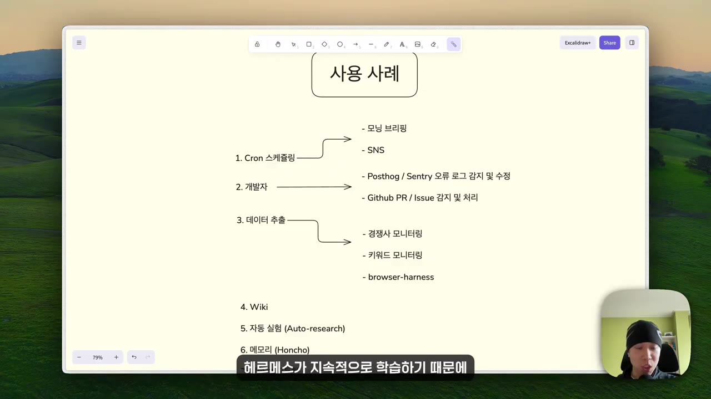
- 모닝 브리핑: 이메일·캘린더·관심 주제를 연결해 두면, 누구에게 답장하는지·어떤 회의를 준비하는지·어떤 주제에 후속 질문을 하는지에 따라 스킬이 자동으로 바뀌어 2주 뒤엔 품질이 달라집니다.
- SNS 포스팅: "매일 아침 7시, 특정 분야 정보를 바탕으로 올릴 만한 포스팅 3개를 세 줄 요약으로." 단, 내 SNS 정보를 먼저 학습시켜야 합니다. 카드뉴스나 영상까지 미리 만들어 두게 할 수도 있습니다.
- 이벤트 기반 실행: PostHog·Sentry 같은 서비스와 연결해 오류를 실시간으로 감지하고 수정안을 내거나 직접 고칩니다. 자고 일어나면 밤사이 생긴 에러와 수정 내역을 보고받습니다. GitHub 이슈도 같은 방식으로 처리합니다.
- 스텔스 브라우저 내장(사이트 차단을 덜 받는 자동 브라우저): 경쟁사 가격·디자인 변경 감지, 경쟁사 SNS 분석, 유튜브 채널·키워드 모니터링, Product Hunt·앱스토어에서 "별점 3점 이하 리뷰로 기존 제품의 불만 정리". 실제 브라우저를 조작하는 도구(자막상 '브라우저네스', 이름 불분명)는 다음 영상으로 미뤘습니다.
- 통합 메모리: 브리핑·마케팅·일정을 맡는 메모리와 코드베이스 메모리를 공유해, 모든 기능이 서로의 맥락을 활용합니다. 프로젝트가 커지면 여러 에이전트로 나누는 게 나을 수도 있습니다.
- LLM 위키(카파시 방식, 기본 스킬): 소스를 지정하면 서로 연결된 마크다운 파일로 정리합니다. Obsidian으로 열면 지식 그래프를 눈으로 볼 수 있습니다.
- 자동 실험 패턴: 목표와 제약을 정해 주면 조금 바꾸고, 테스트하고, 좋은 결과만 남기는 과정을 자동으로 반복합니다(이메일 오픈율, 랜딩페이지 전환율 등). 이전 결과를 바탕으로 다음 변경을 예측하므로 무작위 테스트가 아닙니다.
- 메모리 강화: Honcho(혼초)를 연동합니다. 생활 자동화로는 "내가 매일 반복하는데 자동화할 수 있는 게 뭐야?", "자기 전에 내 삶을 편하게 해 줄 도구를 만들어 줘" 같은 지시를 예로 듭니다.
💡 설치하고 반복 작업 하나를 맡겨 한 달 돌려 본 뒤에 판단하라. GPT처럼 쓰다 끝내면 도구를 못 쓴 것이다.
핵심 기능 업데이트: 멀티에이전트와 대시보드 (20:00)
헤르메스는 특정 모델에 묶이지 않는 오픈소스이고, 영상은 이를 '도구보다 직원'에 비유합니다. 사장이 지시하면 직원이 Claude Code·Codex 같은 도구를 골라 쓰는 구조입니다.
- 대시보드:
hermes dashboard로 열고, 사용 기록·모델·키 설정·크론 작업을 화면에서 관리합니다. VPS라면 SSH 터널이 필요합니다(아래 따라 해보기 참고).
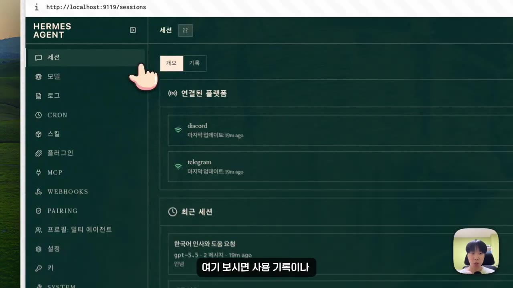
- 목표 올리기
- 실행 가능성 판단
- 작업 쪼개기
- 담당 지정·병렬 처리
- 1목표 올리기
칸반 보드 왼쪽 'Triage' 칸에 정리 안 된 목표를 던진다. 예: "새 랜딩 페이지를 만들어 줘" (23:51)
- 2실행 가능성 판단
헤르메스가 바로 실행할 일인지, 더 잘게 나눌 일인지 판단한다
- 3작업 쪼개기
디자인·카피·구현·검수처럼 작은 작업으로 나눈다
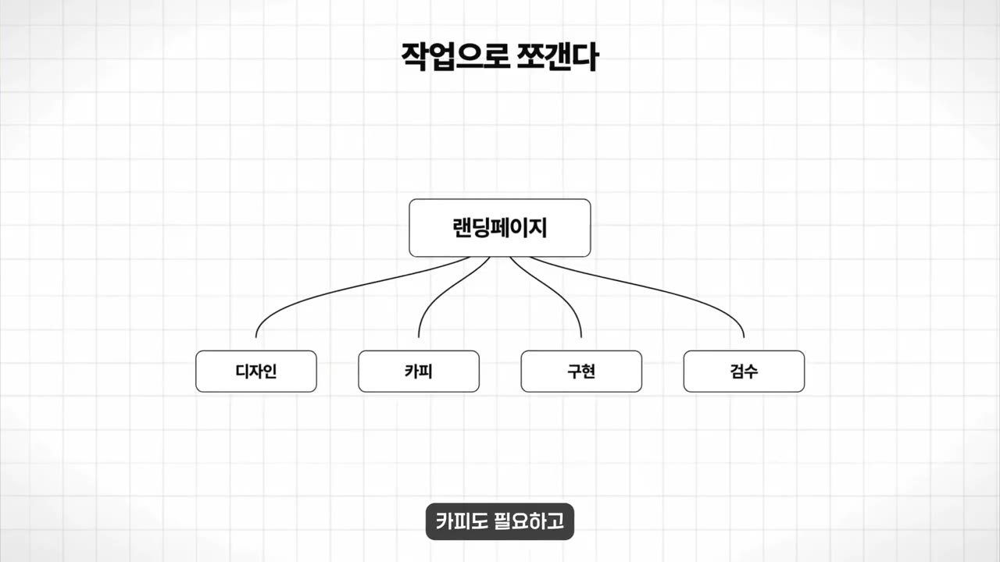
랜딩페이지를 디자인·카피·구현·검수로 쪼개는 도식 · ▶ 24:23 - 4담당 지정·병렬 처리
디자인 에이전트, 코딩 에이전트, 검수 에이전트가 동시에 처리한다
- 세션 리콜: "지난주 화요일에 뭐 했지?"라고 물으면 그날 작업을 찾아 줍니다. 토큰을 쓰지 않아 비용이 들지 않습니다.
/background: 백그라운드로 작업을 돌리면서 대화를 이어 갈 수 있습니다. 예: 랜딩페이지 제작, 업데이트 정리, Product Hunt 신제품 조회를 맡겨 놓고 그사이 "월드컵 첫 경기 언제야?"를 묻는 식입니다.- Codex CLI 공식 지원: 헤르메스가 지휘하고 Codex가 코딩합니다. 칸반과 합치면 코딩도 병렬로 처리되고, OpenAI 구독 하나로 둘 다 쓸 수 있습니다.
- 기타 업데이트(영상에서 직접 시연하지는 않음)
- Computer Use: 화면을 보고 클릭하는 기능. 현재 맥 전용이고 맥 권한을 줘야 합니다.
- 영상 생성: Grok의 영상 생성을 끌어다 쓰므로 Grok 구독이나 별도 키가 필요합니다.
- X 실시간 검색: 마찬가지로 Grok 인증이 필요합니다.
💡 헤르메스는 결국 내가 남긴 기록으로 나를 파악한다. 나와 회사 정보를 문서로 남기는 습관이 먼저다.
실전 활용법: Jay의 세컨드 브레인 세팅 (27:53)
나에 대한 자료를 거의 다 넣고 MCP(외부 서비스 연결 규격)로 자주 쓰는 서비스를 연결하면, 헤르메스가 '또 하나의 나'처럼 움직입니다. 설명하지 않아도 나를 아니까 빠르고, 다른 각도의 조언도 해 줍니다.
- Notion 내보내기
- 위키로 구조화
- Claude 기록 내보내기
- 한 폴더로 합치기
- 1Notion 내보내기
오른쪽 위 '내보내기'로 워크스페이스 전체를 내보내 폴더째 헤르메스에 넣는다. Notion MCP를 쓰면 별도 폴더에 동기화도 된다 (29:58)
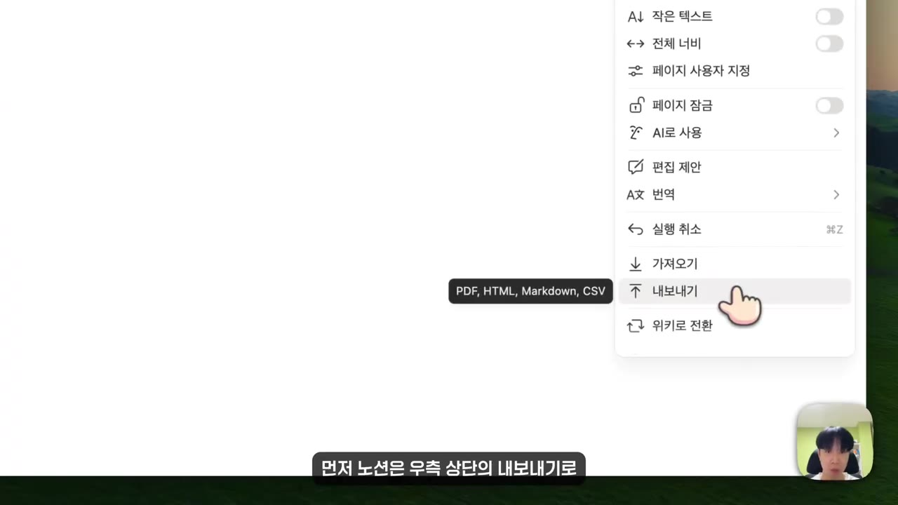
Notion 메뉴의 '내보내기'(PDF, HTML, Markdown, CSV) · ▶ 30:00 - 2위키로 구조화
내장 LLM 위키에 간단한 가이드라인만 주면 AI가 읽기 좋은 형태로 정리한다
- 3Claude 기록 내보내기
Claude 설정 → 개인정보 보호 탭 → 데이터 내보내기. 전체 대화와 Claude가 나를 정의한 메모리 파일까지 받는다 (30:22)
- 4한 폴더로 합치기
모든 자료를 하나의 폴더로 모으고 헤르메스를 그 위에 올린다
헤르메스 데스크톱 앱(텔레그램 대비 장점)
- 작업마다 세션이 시각적으로 나뉩니다(텔레그램은 대화가 한 덩어리).
- 프로필: 모델과 기억이 서로 다른 헤르메스 여러 개를 두고 작업 성격에 따라 골라 씁니다.
- 아티팩트: 보낸 링크와 파일을 한곳에서 봅니다. 스킬 탭에서는 켜져 있는 스킬을 확인합니다.
- 리모트 게이트웨이: 헤르메스가 VPS에 있어도 데스크톱 앱으로 연결할 수 있습니다.
추가 세팅
- 메모리: Honcho. 대화를 요약 저장하는 데 그치지 않고 사고방식과 말투를 계속 학습하는 메모리 층입니다.
- 비용: 깊은 사고가 필요한 일은 상위 모델, 코딩·반복 작업은 가성비 모델로 나눕니다. Jay는 주 모델 GPT 5.5, 보조 모델 Kimi K2.6을 씁니다.
고정으로 돌리는 작업 2가지
- 메일 자동 답장: Gmail과 연동해 주기적으로 확인하고, 답장이 필요한 메일을 골라 내 스타일로 초안까지 씁니다.
- 유튜브 리뷰(크론): YouTube API로 스튜디오 데이터에 접근해 일일 분석 리포트, 기존 영상 성과, 다음 영상 방향을 매일 논의합니다.
- 대시보드를 북마크해 두고, 아침에 칸반에 그날 할 일을 적은 뒤 자동화할 수 있는 건 바로 넘깁니다.
해외 정보 모니터링(X·Reddit)
- Agent Reach(에이전트가 웹을 읽게 해 주는 도구)를 붙입니다. 설치는 GitHub 링크를 헤르메스에게 주고 "이거 설치해서 ○○ 채널 연결해 줘"라고 한 뒤 필요한 정보를 제공하면 됩니다.
- 볼 대상을 처음부터 좁히는 게 핵심입니다. Reddit은 특정 서브레딧(Claude·OpenAI 관련, 제품을 만든다면 SaaS·사이드 프로젝트), X는 특정 인물과 AI 업계 뉴스 채널로 정해 둡니다.
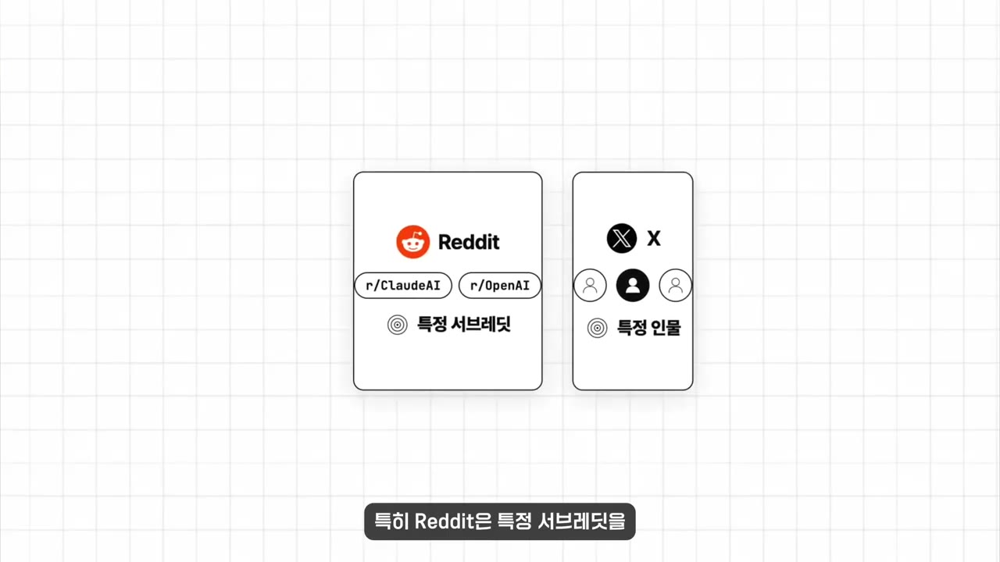
- 제품을 만드는 사람이라면 Product Hunt·Indie Hackers·Hacker News를 "매일 확인하게 설정해 줘"라고만 해도 됩니다.
아이디어 빠르게 검증하기: Product Hunt에서 AI 회의록 제품이 자주 보이자, 제품 설명과 레퍼런스 디자인 스크린샷만 주고 헤르메스 안에서 바로 프로토타입을 만들었습니다. 회의록에서 할 일·담당자·마감일을 카드로 뽑아 주는 동작하는 결과물이 나왔고, 색상만 손봤다고 합니다. 본 프로젝트라면 Claude Code로 키웁니다.
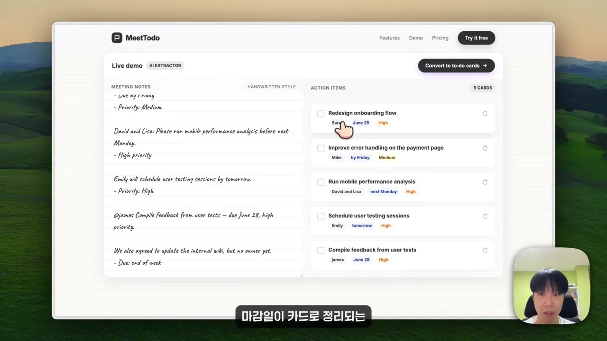
가족용 헤르메스: 프로필 하나를 가족용으로 만들어, 안 쓰는 아이패드에 텔레그램을 깔고 거실에 뒀습니다. Higgsfield MCP(자막상 '핵스피드/픽스필드')를 연결해 이미지와 영상도 만들 수 있습니다. 가족에게는 음성 대화 세팅을 추천합니다.
💡 진행 중인 개발 프로젝트는 Codex·Claude Code로, AI와 나누던 대화와 생각은 헤르메스로 옮겨라.
최신 업데이트 (38:37)
최근 한 달 릴리스가 60개를 넘었습니다. 기억을 꾸준히 쌓아 온 사용자들은 이미 사업 전반을 상당히 자동화했고, "시간을 들여 키운 사람과 아닌 사람의 격차가 벌어지는 도구"라고 말합니다.
① MoA(Mixture of Agents): 한 질문을 여러 모델에 동시에 던지고, 각자 낸 답을 종합 모델이 하나로 정리합니다.
- 세팅: 터미널에서
hermes moa configure→ 메인 모델과 참조 모델을 고릅니다. 영상은 메인 'GPT 솔', 참조 'Kimi K3'·'GPT 루나'를 골랐습니다(자막상 모델명 불분명).
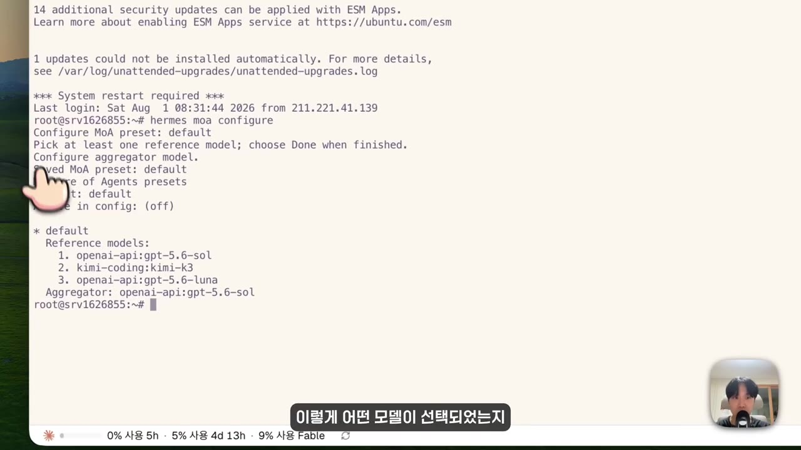
- 사용: 모델을 MoA로 바꾸고 슬래시 명령(자막상 '슬A', 정확한 명령어 불분명)으로 요청하면 각 모델의 사고 과정과 최종 종합 답이 나옵니다.
- 아키텍처 결정이나 사업 방향처럼 틀리면 비용이 큰 문제에 쓰고, 단순한 질문에는 쓰지 않습니다(토큰과 시간이 더 듦).
② /learn: 링크를 붙여 넣으면 재사용할 수 있는 스킬로 바꿔 줍니다. X의 팁 글, 블로그, 공식 문서 모두 됩니다. 북마크를 쌓아 두는 대신 에이전트에게 넘기는 셈입니다.
③ 학습 기록 보기(자막상 '슬래시 전니/전일', 명령어 철자 불분명): 그동안 쌓인 기억과 스킬을 한눈에 봅니다. 시간순 타임라인과 '어떤 기억이 어떤 스킬과 이어지는지' 보여 주는 그래프가 있고, 편집·삭제가 됩니다. 틀리거나 낡은 기억이 쌓이면 품질이 떨어지므로 점검이 필요합니다.
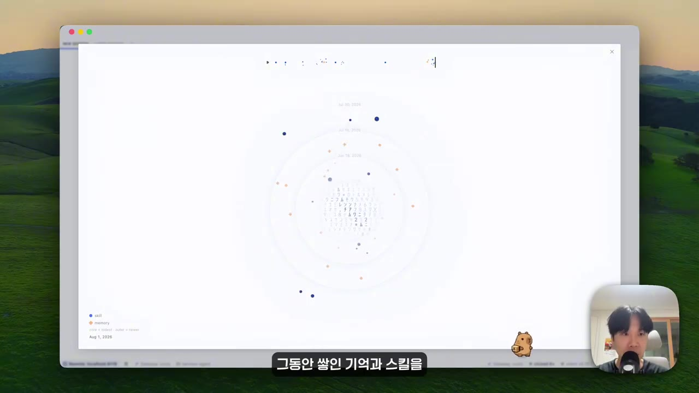
④ 데스크톱 앱 '프로젝트': 사이드바에서 코드베이스를 프로젝트 단위로 관리합니다. 리뷰 패널과 오른쪽 사이드바에서 파일별 변경 사항을 보고 직접 고칠 수 있습니다(Orca 같은 도구와 비슷).
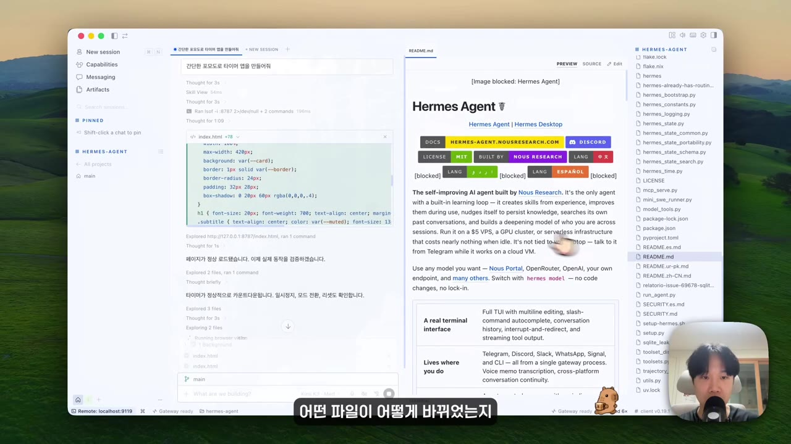
💡 하나만 써 본다면 MoA. 다음에 결정하기 애매한 문제가 생기면 한 번 던져 보라.
봇 모드 (45:30)
Grok Bot: xAI가 Cursor를 인수한 뒤 내놓은 제품입니다. 대화창 대신 봇을 만들고, 이름과 역할을 주고, 카톡처럼 말을 걸어 일을 시킵니다. 봇끼리 일을 넘기고, 봇마다 브라우저와 터미널이 있는 컴퓨터를 씁니다. 가격은 Grok 기준 30~300달러, Cursor 기준 최저 20달러이고 모델은 Grok 4.6만 됩니다. Jay는 비싸고 필요성이 크지 않아 아직 쓰지 않았습니다.
헤르메스 봇 모드: Grok Bot 출시 3일 뒤 플러그인 베타로 나왔고, 이번 업데이트에서 데스크톱 앱에 기본으로 들어갔습니다. 업데이트하면 왼쪽에 'Bot' 탭이 생깁니다. 사실 기존 프로필(기억이 독립된 에이전트)에 얼굴과 채팅창을 붙인 것이라, 쓰던 프로필이 그대로 봇으로 보입니다.
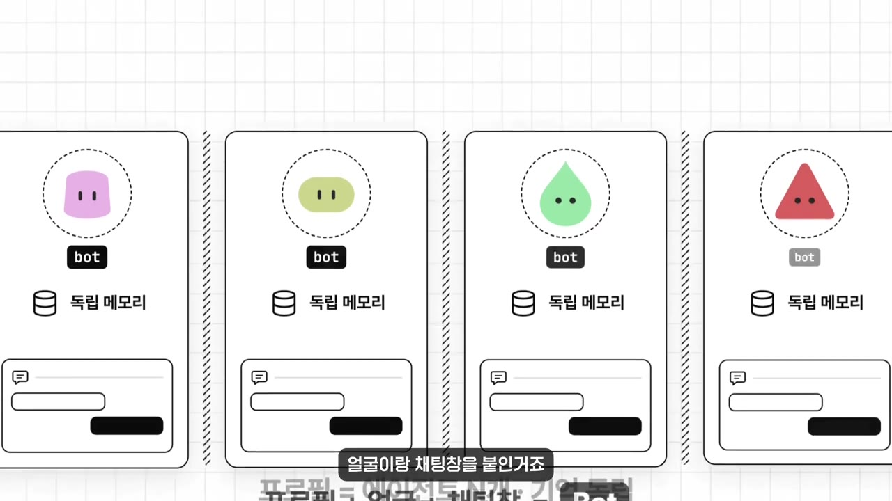
- 만들기:
+→ New Bot → 이름·타이틀·설명 입력(아바타는 이름에 따라 자동 생성되고 스타일 변경 가능) → Advanced에서 봇별 모델 지정과SOUL.md(자세한 페르소나 파일, 자막상 '솔다디/솔더냄')를 설정합니다. 복잡하면 채팅으로 "이런 봇 만들어 줘"라고 해도 됩니다. - 봇마다 독립된 루틴(정기 작업)을 사이드바에서 추가·관리합니다.
- 봇끼리 소통: 채팅에서
@로 부르거나 그룹 채팅을 만듭니다.
| 비교 | Grok Bot ("애플") | 헤르메스 봇 ("리눅스") |
|---|---|---|
| 가격·세팅 | 비싸지만 설치하면 바로 사용 | 오픈소스라 모델 비용만, 세팅할 게 많음 |
| 모델 | Grok 4.6만 | 봇마다 선택(GPT·Claude·로컬 모델) |
| 기능 | 봇마다 클라우드 컴퓨터 제공, 사용감이 매끄러움 | 서버와 모델을 원하는 대로 구성 |
- 리서처
- 에디터
- 디렉터
- 안티
- 1리서처
매주 AI 소식을 찾는다. 주 1회 루틴이고 VPS라 노트북을 꺼도 돈다. 끝나면 에디터에게 메시지를 보낸다 (50:20)
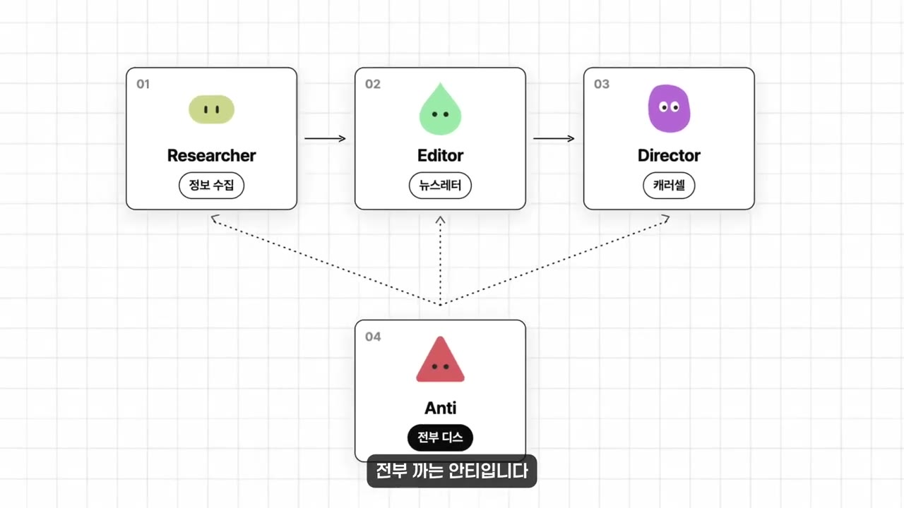
Researcher→Editor→Director 흐름과 비평가 Anti · ▶ 50:21 - 2에디터
리서치를 뉴스레터 초안으로 쓴다.
SOUL.md에 말투·형식 지침을 넣었다 - 3디렉터
뉴스레터에서 한 부분을 골라 캐러셀(넘겨 보는 카드 이미지)을 만든다. Higgsfield MCP로 이미지를 생성하고 지침으로 디자인을 통일한다
- 4안티
일부러 "디스하라"고 설정한 비평가. 게시 전에 아쉬운 점을 짚어 완성도를 높인다
💡 봇 개수보다 내 워크플로에 맞는 봇이 중요하다. 모르겠으면 내 일주일을 설명하고 "나한테 어떤 봇이 필요해?"라고 물어보라.
따라 해보기
준비물
- VPS: Hostinger KVM2 플랜 권장(월 약 9달러, 영상은 쿠폰 코드
JAYCHOI로 10% 추가 할인 안내). 로컬 PC 설치도 됩니다. - 모델: OpenAI 구독(OAuth 로그인) 또는 OpenAI API 키, 또는 OpenRouter. 사용량만큼 비용이 듭니다.
- 메신저: 디스코드 계정(또는 텔레그램)
- 내 컴퓨터의 터미널(SSH 접속용)
- 소요 시간: 영상 기준 30분~1시간(자막상 정확한 시간 불분명)
단계별 방법
- VPS 생성
- 터미널 접속
- 헤르메스 설치
- 모델 설정
- 디스코드 봇 만들기
- OAuth2 초대 링크
- 서버 만들고 초대
- ID 입력
- 게이트웨이 실행
- 1VPS 생성
헤르메스 원클릭 설치로 구매했다면 3단계로 건너뛴다. 아니면 Hostinger 왼쪽 'VPS' 탭 → 새 VPS 생성 → 가장 가까운 서버 위치 → 'Docker 애플리케이션'에서 "Hermes" 검색 → 진행 (6:58)
- 2터미널 접속
대시보드 오른쪽 위 '터미널' 버튼을 누르거나, SSH 명령을 복사해 내 터미널에 붙여 넣는다. 비밀번호는 루트 비밀번호 '변경' → '비밀번호 생성'으로 만든 값을 쓴다 (7:21)
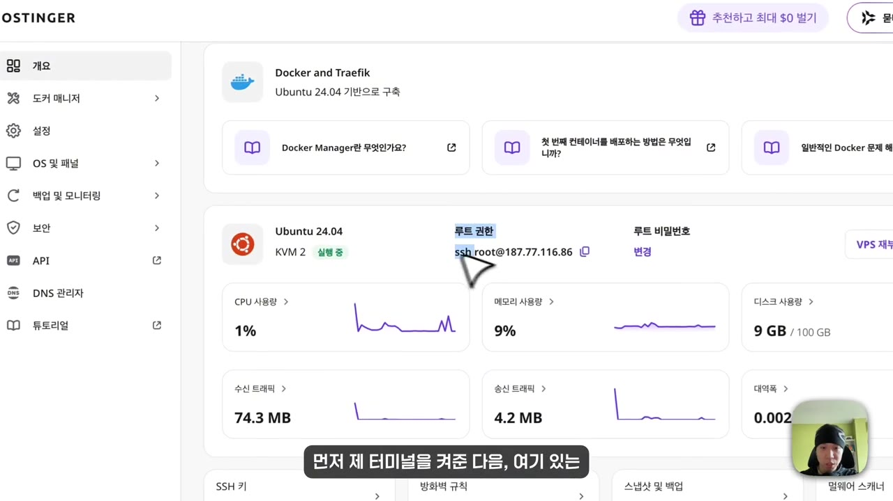
VPS 개요의 루트 권한 ssh root@ 명령과 비밀번호 '변경' · ▶ 7:35 - 3헤르메스 설치
원클릭 설치를 했다면 생략. 그 외에는 헤르메스 공식 문서의 설치 명령어를 순서대로 복사해 붙여 넣는다 (8:09)
- 4모델 설정
Quick Setup → 모델 선택. 영상은 'Custom'을 골라 OpenAI 베이스 URL과 API 키를 넣고 모델
GPT 5.5를 지정, 나머지는 Enter로 넘겼다 (8:31)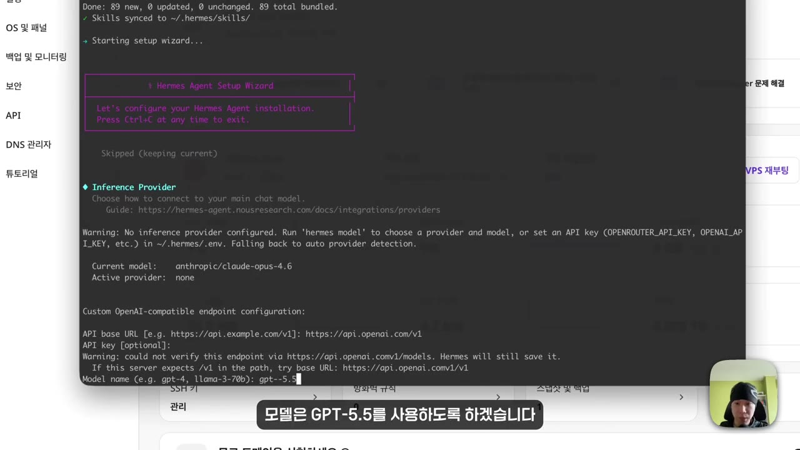
Custom 엔드포인트에 OpenAI base URL 입력, 모델 gpt-5.5 지정 · ▶ 9:30 - 5디스코드 봇 만들기
Discord 개발자 포털 → Applications → New Application(이름 예: Hermes) → 왼쪽 'Bot' → 'Reset Token' → 비밀번호 인증 → 토큰 복사(한 번만 보여 줌) → 아래로 내려 권한 선택 후 저장 (10:26)
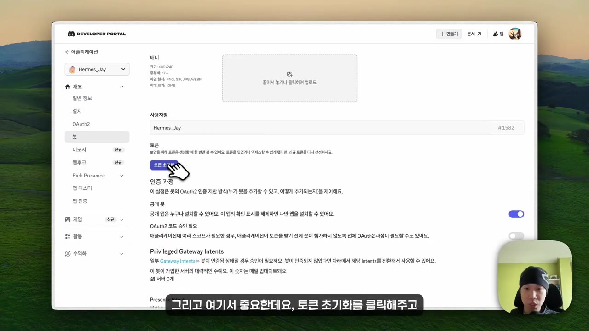
디스코드 개발자 포털 봇 메뉴에서 '토큰 초기화' 클릭 · ▶ 10:47 - 6OAuth2 초대 링크
왼쪽 'OAuth2' → 스코프에서
bot과applications.commands를 반드시 켜고 권한 설정 → 맨 아래 생성된 URL 복사 (11:11) - 7서버 만들고 초대
디스코드에서 새 서버를 만들고, 복사한 URL로 들어가 그 서버를 선택해 승인한다 (11:35)
- 8ID 입력
hermes gateway setup에서 디스코드를 고르고 토큰을 붙여 넣는다. 디스코드 설정 → 개발자 → 개발자 모드 ON → 내 프로필에서 '사용자 ID 복사' → 붙여 넣기. 홈 채널 ID도 붙여 넣는다 (12:00)- 홈 채널 ID 칸에 영상은 '서버 ID 복사하기'를 눌렀다(아래 점검 참고)
- 9게이트웨이 실행
hermes gateway로 서버를 시작하면 디스코드에서 봇이 온라인이 된다. 터미널에서hermes로 바로 대화할 수도 있다 (12:22)
8~9단계에 입력할 내용
hermes gateway setup
hermes gateway
hermes
(선택) VPS의 대시보드를 내 노트북에서 열기 (22:18)
- VPS 접속
- 대시보드 실행
- SSH 터널 열기
- 브라우저 접속
- 1VPS 접속
터미널에서 VPS에 SSH로 접속한다
- 2대시보드 실행
hermes dashboard입력. VPS 9119번 포트에서 실행 중이라는 주소가 뜬다. 로컬 설치라면 여기서 끝 - 3SSH 터널 열기
새 터미널을 열고 아래 명령을 입력한 뒤 비밀번호를 넣는다. 아무 출력 없이 멈춘 것처럼 보이면 정상이다
- 4브라우저 접속
localhost:9119로 들어간다
3단계에 입력할 내용 (<대시보드 주소>는 2단계에 뜬 주소, <VPS IP>는 Hostinger 대시보드의 root@ 뒤 값)
ssh -N -L 9119:<대시보드 주소> root@<VPS IP>
따라 할 수 있는지 점검
- ✅ 바로 따라 할 수 있음: VPS 생성, 루트 비밀번호 생성과 접속, 모델 Custom 설정, 디스코드 앱·토큰 발급, OAuth2 스코프, 개발자 모드로 ID 복사,
hermes gateway실행, 대시보드 SSH 터널 - ⚠️ 3단계 「헤르메스 설치」: 공식 문서의 설치 명령어 원문이 영상에 나오지 않습니다 → https://hermes-agent.nousresearch.com/ 문서의 Install 항목에서 복사하세요.
- ⚠️ 4단계 「모델 설정」: 'OpenAI 베이스 URL'의 실제 값이 영상에 없습니다 → (보충) OpenAI API는 보통
https://api.openai.com/v1입니다. 모델명은 설정 화면에 표시된 정확한 ID로 입력하세요. - ⚠️ 5·6단계 「봇 권한」: "몇 가지 권한"을 어떤 것으로 골랐는지 말로 나오지 않습니다 → 영상 10:49~11:20 화면을 확인하세요. (보충) 보통 Message Content Intent와 메시지 읽기·보내기 권한이 필요합니다.
- ⚠️ 8단계 「ID 입력」: 'gateway setup'에 들어가기 전 "No"를 누르는 질문이 무엇인지 불분명하고, 디스코드 선택은 Space 키로 합니다 → 영상 10:02 화면을 확인하세요.
- ❓ 8단계: 홈 '채널' ID를 묻는데 영상은 '서버 ID 복사하기'를 눌렀습니다. 메시지가 안 오면 채널을 우클릭해 '채널 ID 복사'로 바꿔 보세요(보충).
- ⚠️ 원클릭 설치가 아닌 경우 Docker 앱에서 Hermes를 고른 뒤의 화면이 생략됐습니다 → Hostinger 문서를 참고하세요.
확인 방법
hermes gateway실행 후 '서버 시작' 알림이 뜨고, 디스코드 멤버 목록에서 봇이 온라인으로 바뀌면 성공입니다.- 디스코드에서 메시지를 보내 답장이 오고, 슬래시 명령이 동작하면 됩니다.
- 대시보드는
localhost:9119에서 사용 기록·모델·크론 화면이 보이면 성공입니다.
막히면
- 디스코드 봇 토큰은 한 번만 보여 줍니다. 놓쳤으면 Reset Token으로 다시 발급하고, 절대 공개하지 마세요.
- 결과가 기대보다 별로라면 먼저 모델을 의심하세요. 저가 모델이 '헤르메스가 별로'라고 느끼는 가장 큰 원인입니다.
- 처음에 원하는 대로 안 되는 건 정상입니다. 내 정보를 충분히 넣고 한 달은 돌려 보세요.
기억할 숫자·인용
- VPS 비용 월 5~20달러, Hostinger KVM2는 월 약 9달러. 대시보드 포트 9119
- 모닝 브리핑은 2주 뒤 품질 변화, 한 달 뒤 완전히 다른 결과(영상 주장)
- 최근 한 달 릴리스 60개 이상. Grok Bot 출시 3일 만에 헤르메스 봇 모드 공개
- Grok Bot 가격: Grok 기준 30~300달러, Cursor 기준 20달러부터. 모델은 Grok 4.6만
- Jay의 모델 구성: 주 GPT 5.5 + 보조 Kimi K2.6
- "도구가 기대에 못 미친 게 아니라, 아직 도구가 기다리던 지식을 주지 않은 것"
- "Grok Bot은 애플이고 헤르메스는 리눅스다"
- "기능이 나올 때마다 갈아타기보다, AI에게 매번 똑같이 설명하는 일이 뭔지 찾는 게 먼저"
생각해볼 점
- 이 영상은 Hostinger의 지원을 받아 만들어졌습니다. VPS가 가장 현실적이라는 결론과 Hostinger 추천에는 광고 맥락이 있습니다. (내 의견) 원클릭 설치가 아니어도 다른 VPS나 남는 PC로 충분할 수 있습니다.
- "OpenClaw는 오래 쓰면 무거워진다", "한 달 뒤 품질이 달라진다"는 발표자 개인의 경험입니다. 객관적인 비교 데이터는 제시되지 않았습니다.
- (내 의견) Notion 전체, Claude 대화 기록, Gmail, 유튜브 스튜디오까지 한 서버에 모으면 편리한 만큼 유출 위험도 커집니다. 서버 보안(키 관리, 비밀번호 대신 SSH 키 사용 등)을 함께 챙겨야 하고, 영상에서는 이 부분을 거의 다루지 않습니다.
바로 해볼 일
- 내가 매일·매주 반복하는 일을 10개 적고, 그중 AI에게 매번 똑같이 설명하는 일 하나를 고르기
- Claude 설정 → 개인정보 보호 → 데이터 내보내기로 내 대화 기록과 메모리 파일 받아 두기
- (헤르메스를 쓰고 있다면) 결정하기 애매한 질문 하나를 MoA에 던져 단일 모델 답과 비교해 보기